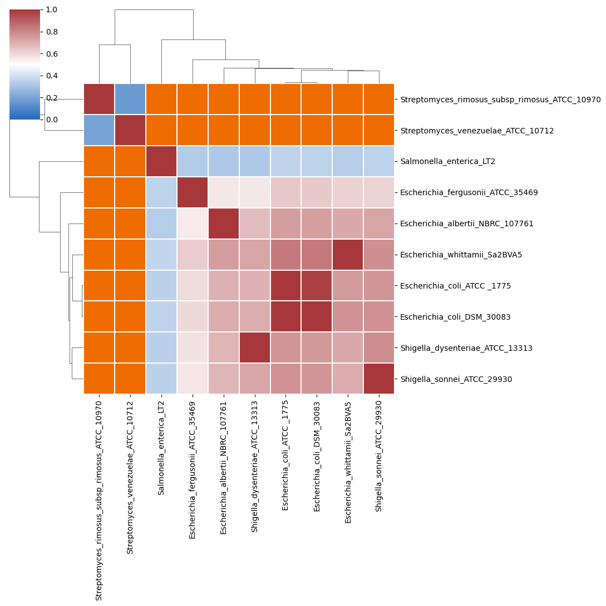
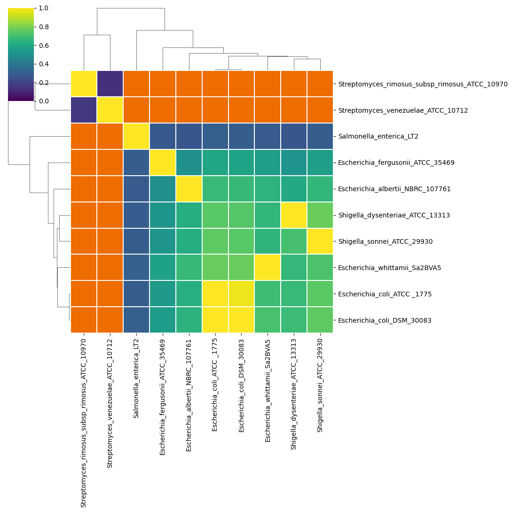
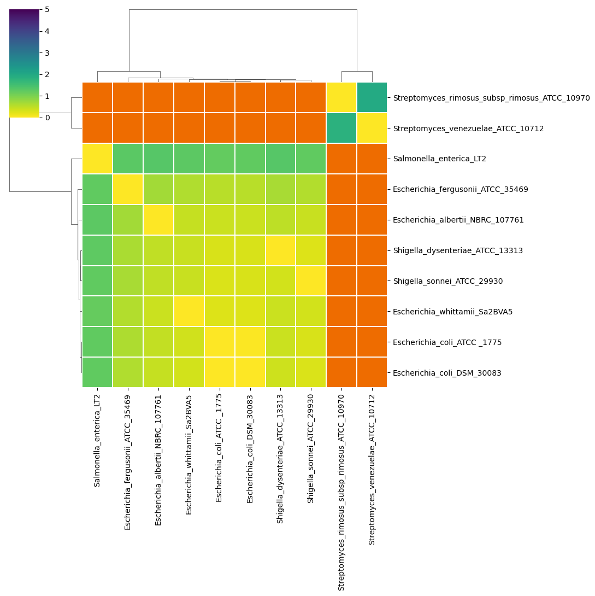
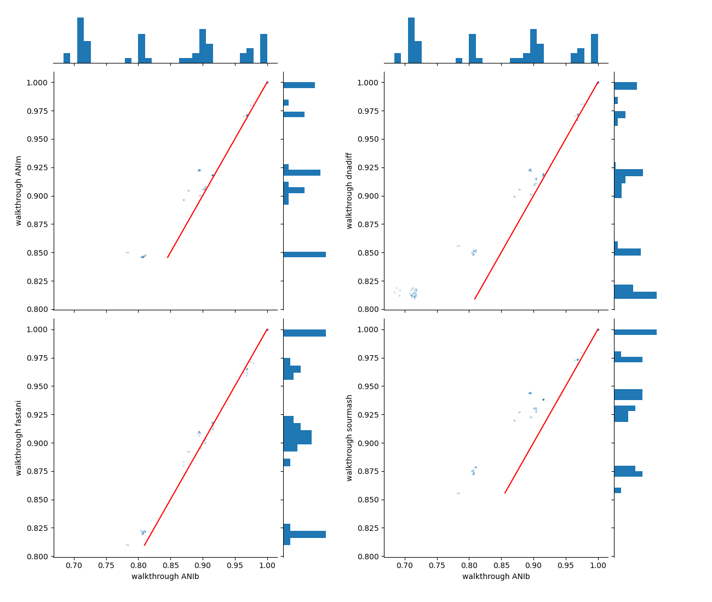
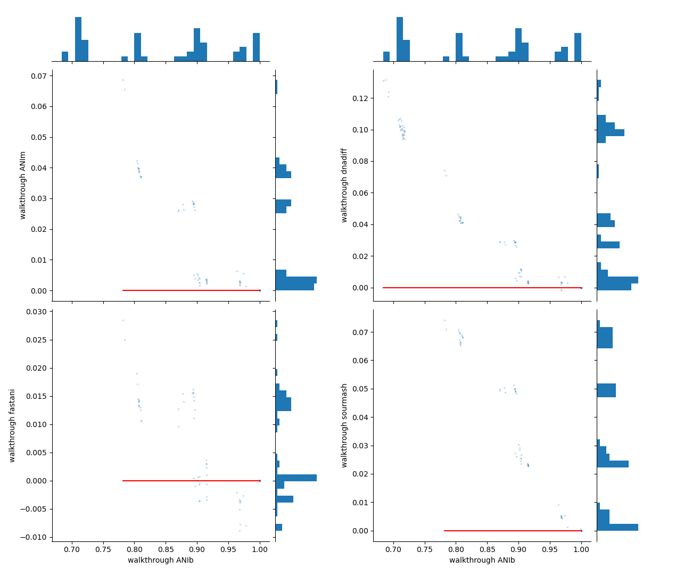

pyANI-plus walkthrough
This section walks you through how pyANI-plus can be applied to calculate Average Nucleotide Identity, render graphical and tabular summary output, and perform other related measures for whole genome comparisons. The general procedue for any pyANI-plus analysis is:
- Collect genomes for analysis
- Perform ANI analysis using diffrent methods such as ANIb, ANIm etc.
- Report and visualise analysis report
- Use the analysis results to classify input genomes and generate species hypotheses
Before using pyANI-plus, make sure to install it on a local machine like a laptop, desktop, server, or cluster. Please see section installation for installation instructions.
This is a command-line tool, meaning you type commands into a terminal window to run it. To view the avaliable options we type pyani-plus (in lower case), space, then -h (minus lower-case H) for the help option, and finally enter or return to run the command:
pyani-plus -hThis should output the following - hopefully in colour depending on your terminal setup:
Usage: pyani-plus [OPTIONS] COMMAND [ARGS]...
╭─ Options ────────────────────────────────────────────────────────────────╮
│ --version -v Show tool version (on stdout) and quit. │
│ --install-completion Install completion for the current │
│ shell. │
│ --show-completion Show completion for the current shell, │
│ to copy it or customize the │
│ installation. │
│ --help -h Show this message and exit. │
╰──────────────────────────────────────────────────────────────────────────╯
╭─ Commands ───────────────────────────────────────────────────────────────╮
│ resume Resume any (partial) run already logged in the │
│ database. │
│ list-runs List the runs defined in a given pyANI-plus SQLite3 │
│ database. │
│ delete-run Delete any single run from the given pyANI-plus │
│ SQLite3 database. │
│ export-run Export any single run from the given pyANI-plus │
│ SQLite3 database. │
│ plot-run Plot heatmaps and distributions for any single run. │
│ plot-run-comp Plot comparisons between multiple runs. │
│ classify Classify genomes into clusters based on ANI │
│ results. │
╰──────────────────────────────────────────────────────────────────────────╯
╭─ ANI methods ────────────────────────────────────────────────────────────╮
│ anim Execute ANIm calculations, logged to a pyANI-plus │
│ SQLite3 database. │
│ dnadiff Execute mumer-based dnadiff calculations, logged to │
│ a pyANI-plus SQLite3 database. │
│ anib Execute ANIb calculations, logged to a pyANI-plus │
│ SQLite3 database. │
│ fastani Execute fastANI calculations, logged to a │
│ pyANI-plus SQLite3 database. │
│ sourmash Execute sourmash-plugin-branchwater ANI │
│ calculations, logged to a pyANI-plus SQLite3 │
│ database. │
│ external-alignment Compute pairwise ANI from given │
│ multiple-sequence-alignment (MSA) file. │
╰──────────────────────────────────────────────────────────────────────────╯To see the options for a specific subcommand, use pyani-plus <subcommand> -h. For example, to view options for the ANIb method:
pyani-plus anib -hExpected output:
Usage: pyani-plus anib [OPTIONS] FASTA
Execute ANIb calculations, logged to a pyANI-plus SQLite3 database.
╭─ Arguments ──────────────────────────────────────────────────────────────╮
│ * fasta PATH Directory of FASTA files (extensions .fas, .fasta, │
│ .fna). │
│ [required] │
╰──────────────────────────────────────────────────────────────────────────╯
╭─ Options ────────────────────────────────────────────────────────────────╮
│ * --database -d FILE Path to pyANI-plus SQLite3 │
│ database. │
│ [required] │
│ --name TEXT Run name. Default is 'N genomes │
│ using METHOD'. │
│ --create-db Create database if does not │
│ exist. │
│ --executor [local|slurm] How should the internal tools be │
│ run? │
│ [default: local] │
│ --help -h Show this message and exit. │
╰──────────────────────────────────────────────────────────────────────────╯
╭─ Method parameters ──────────────────────────────────────────────────────╮
│ --fragsize INTEGER RANGE [x>=1] Comparison method fragment size. │
│ [default: 1020] │
╰──────────────────────────────────────────────────────────────────────────╯
╭─ Debugging ──────────────────────────────────────────────────────────────╮
│ --temp DIRECTORY Directory to use for intermediate files, which │
│ for debugging purposes will not be deleted. │
│ For clusters this must be on a shared drive. │
│ Default behaviour is to use a system specified │
│ temporary directory (specific to the │
│ compute-node when using a cluster) and remove │
│ this afterwards. │
│ --wtemp DIRECTORY Directory to use for temporary workflow │
│ coordination files, which for debugging │
│ purposes will not be deleted. For clusters │
│ this must be on a shared drive. Default │
│ behaviour is to use a system specified │
│ temporary directory (for the local executor) │
│ or a temporary directory under the present │
│ direct (for clusters), and remove this │
│ afterwards. │
│ --log FILE Where to record log(s). Use '-' for no │
│ logging. │
│ [default: pyani-plus.log] │
│ --debug Show debugging level logging at the terminal │
│ (in addition to the log file). │
╰──────────────────────────────────────────────────────────────────────────╯Collect genomes for analysis
While you can work with your choice of genomes as FASTA files placed in a local directory, we suggest using the ten genomes provided when first following this walkthrough to ensure the output matches the expected results.
pyANI-plus accepts FASTA files with the extensions .fasta, .fas, and .fna, along with gzip compressed versions like .fasta.gz, .fas.gz, and .fna.gz. Please make sure that your input files match these extensions to ensure that pyANI-plus works.
Conducting ANI analysis
pyANI-plus enables genome comparison using various ANI methods. In this walkthrough, we will demonstrate methods such as ANIm, ANIb, dnadiff, FastANI, and Sourmash. While running all methods is not mandatory, we recommend doing so, as we will later compare their results using the plot-run-comp command.
Running any ANI method on requires you specify the directory containing the genome data (e.g., walkthrough_data/), and the path to the pyANI-plus SQLite3 database (walkthrough.db for this walkthrough).
If this is your first analysis and the SQLite3 database does not yet exist, you must use the --create-db option; otherwise, you’ll encounter the following error:
ERROR: Database walkthrough.db does not exist, but not using --create-dbOptionally, you can provide a custom name for the analysis with the --name option for easier reference.
If you want to run the ANI analysis on a cluster using SLURM, you must set the execution method using --executor slurm (the default is local, see later).
Conduct ANIb analysis
In this walkthrough, we will first run the ANIb analysis on the downloaded genomes using the following command line:
pyani-plus anib walkthrough_data/ --database walkthrough.db --create-db --name "walkthrough ANIb"With the suggested ten genomes this takes about 5 minutes on a recent multi-core desktop computer. The other methods should all be faster.
If you wish you can select a different fragment size for the comparison method using the --fragsize option. The default size is 1020bp (listed in the help output shown earlier), which is typically used for ANIb.
Conduct ANIm analysis
Next, we will run the ANIm analysis on the same genomes using the following command line:
pyani-plus anim walkthrough_data/ --database walkthrough.db --name "walkthrough ANIm"In ANIm analysis, the default setting uses anchor matches that are unique in the reference but not necessarily unique in the query (--mode mum). You can change this to include all anchor matches, regardless of their uniqueness, by setting the --mode option to maxmatch.
Conduct dnadiff analysis
To compare genomes in the input walkthrough_data directory using dnadiff method use the following command line:
pyani-plus dnadiff walkthrough_data/ --database walkthrough.db --name "walkthrough dnadiff"Conduct fastani analysis
To run fastani analysis on the genomes in the input walkthrough_data directory use the following command line:
pyani-plus fastani walkthrough_data/ --database walkthrough.db --name "walkthrough fastani"In fastani analysis, additional method parameters can be changed by the user. These include:
--fragsize: Fragment length used in the analysis (default:3000).--kmersize: K-mer size, set to16by default. It can be set to any value smaller than 16.--minmatch: Minimum fraction of the genome that must be shared for ANI to be considered reliable. If the reference and query genome sizes differ, the smaller genome is used. (Default:0.2).
Conduct sourmash analysis
Lastly, we can run sourmash analysis with the following command line:
pyani-plus sourmash walkthrough_data/ --database walkthrough.db --name "walkthrough sourmash"For sourmash analysis, additional method parameters can be changed by the user. These include: - --scaled: Compression ration (defult: 1000) - --kmersize: K-mer size (default: 31)
Reporting Analyses and Analysis Results
List all runs in the database
pyANI-plus enables you to view all runs defined in a SQLite3 database. To display all runs from the database (eg. walkthrough.db for this walkthrough), use this command:
pyani-plus list-runs --database walkthrough.dbYou will see the following table, or something similar, depending on the analyses contained within the database, displayed on your screen:
5 analysis runs in walkthrough.db
┏━━━━┳━━━━━━━━━━━━┳━━━━━━━━━━┳━━━━━━┳━━━━━━┳━━━━━━┳━━━━━━━━━┳━━━━━━━━┳━━━━━━━━━━━━━━━━━━━━━━┓
┃ ID ┃ Date ┃ Method ┃ Done ┃ Null ┃ Miss ┃ Total ┃ Status ┃ Name ┃
┡━━━━╇━━━━━━━━━━━━╇━━━━━━━━━━╇━━━━━━╇━━━━━━╇━━━━━━╇━━━━━━━━━╇━━━━━━━━╇━━━━━━━━━━━━━━━━━━━━━━┩
│ 1 │ 2025-03-17 │ ANIb │ 100 │ 0 │ 0 │ 100=10² │ Done │ walkthrough ANIb │
│ 2 │ 2025-03-17 │ ANIm │ 68 │ 32 │ 0 │ 100=10² │ Done │ walkthrough ANIm │
│ 3 │ 2025-03-17 │ dnadiff │ 100 │ 0 │ 0 │ 100=10² │ Done │ walkthrough dnadiff │
│ 4 │ 2025-03-17 │ fastANI │ 68 │ 32 │ 0 │ 100=10² │ Done │ walkthrough fastani │
│ 5 │ 2025-03-17 │ sourmash │ 68 │ 32 │ 0 │ 100=10² │ Done │ walkthrough sourmash │
└────┴────────────┴──────────┴──────┴──────┴──────┴─────────┴────────┴──────────────────────┘In this table, each row represents a single run, and the columns provide the following details:
ID: Unique ID for the runDate: Date when the analysis was executedMethod: ANI method usedDone: Number of completed ANI comparisonsNull: Number of analyses where no alignment was found (e.g., comparisons between highly divergent genomes)Miss: Number of comparisons that were not completedStatus: Current status of the analysis—e.g., Done for completed analyses, Running for comparisons that have started but are still in progressName: Run name.
Exporting ANI results in a tabular format
pyANI-plus allows ANI results to be exported in a tabular format, but the output directory must already be present. In this example, we create a walkthrough_output/ directory and use the following command to export results for the ANIb analysis:
mkdir output # create directory called output
pyani-plus export-run --database walkthrough.db --outdir walkthrough_output/ --run-id 1If --run-id is not specified the latest run will be exported. To export runs for other analyses, you can specify the --run-id by matching the ID number provided in the table provided by list-runs subcommand.
This will report the relevant information to new files in the walkthrough_output/ directory. The matrix output files are named <method>_<property>.tsv while the long form is named <method>_run_<run-id>.tsv and will include the query and subject genomes and all the comparison properties as columns:
.
├── ANIb_aln_lengths.tsv
├── ANIb_hadamard.tsv
├── ANIb_identity.tsv
├── ANIb_query_cov.tsv
├── ANIb_run_1.tsv
├── ANIb_sim_errors.tsv
└── ANIb_tANI.tsvIncomplete runs will return an error. There will be no output for empty run. For partial runs the long form table will be exported, but not the matrices.
Graphical output
Graphical output (JPG, PDF, PNG and SVGZ formats) is obtanined by executing the pyani-plus plot-run subcommand, specifying the database and ouput directory:
pyani-plus plot-run --database walkthrough.db --outdir walkthrough_output/ --run-id 2If --run-id is not specified the latest run will be used to generate graphical output. To generate graphical output for other analyses, you can specify the --run-id by matching the ID number provided in the table provided by list-runs subcommand.
Optionally, you can label genomes using md5 and filename using the --label option.
plot-run subcommand generates the following heatmaps, distribution plots, and tabular output from an ANI analysis for a specified --run_id, using data stored in a local SQLite3 database:
- percentage identity of aligned regions (
<method>_idenity_heatmap.<extension>,<method>_identity_dist.<extension>and<method>_identity.tsv, Figure 1)
{kind=link}
In the above heatmap, each cell represents a pairwise comparision between the genomes shown in the rows and columns, showing the pairwise identity of aligned regions. The dendrograms are single-linkage clustering trees generated from the matrix of pairwise identity results. The default color scheme assigns red to cells with identity \(\geq 0.95\), blue to those with identity \(<0.95\), and orange to cells representing comparisons with no alignment found (e.g., NULLs). This division corresponds to a widely-used convention for bacterial species boundaries.
- percentage coverage of each query genome by aligned regions (
<method>_query_cov_heatmap.<extension>,<method>_query_cov_dist.<extension>,<method>_query_cov_scatter.<extension>and<method>_query_cov.tsv)

In the above heatmap, each cell represents a pairwise comparision between the genomes shown in the rows and columns, showing the pairwise coverage of each genome by aligned regions in the comparison. The dendrograms are single-linkage clustering trees generated from the matrix of pairwise coverage results. The default color scheme assigns red to cells with coverage \(\geq 0.50\), blue to those with coverage \(<0.50\), and orange to cells representing comparisons with no alignment found (e.g., NULLs). This division corresponds to a strict majority of each genome in the comparison being alignable (a plausible minimum requirement for two sequences being considered “the same thing”).
- a Hadamard matrix of percentage identity multiplied by percentage coverage for each comparison (
<method>_hadamard_heatmap.<extension>,<method>_hadamard_dist.<extension>and<method>_hadamard.tsv)

- a total Avenarge Nucleotide Identity (tANI) matrix of he negative log of the coverage multiplied by identity (
<method>_tANI_heatmap.<extension>,<method>_tANI_dist.<extension>,<method>_tANI_scatter.<extension>and<method>_tANI.tsv)

- number of “similarity errors” on each genome (
<method>_sim_errors.tsv) - Long form of ANI results which include the query and subject genomes and all the comparison properties as columns (
<method>_run_<ID>.tsv)
Plotting comparisons between runs
ANI results can vary depending on the method used. pyANI-plus allows you to compare the ANI results from multiple runs. In this example, we show how to use the pyani-plus plot-run-comp subcommand to visualise and compare these results. Running pyani-plus plot-run-comp requires specifying the output directory (e.g., walkthrough_output/), the path to the pyANI-plus SQLite3 database (walkthrough.db for this walkthrough), and a comma-separated list of run IDs for comparison.
The first run ID will be treated as the reference, and all subsequent runs will be compared to it.
In this example, we use ANIb as the reference method, with other methods compared against it.
pyani-plus plot-run-comp --database walkthrough.db --outdir walkthrough_output/ --run-ids 1,2,3,4,5This command generates the following outputs:
- A set of scatterplots where the X-axis represents genome identity from the reference method (here, ANIb), and the Y-axis represents genome identity from the compared methods/runs (
<reference_method>_identity_<run_ID>_scatter_vs_others.<extension>).

pyani-plus plot-run-comp subcommandThe red diagonal line serves as a reference, indicating where data points should align on the scatterplot if the pairwise comparison results match between methods.
- A set of scatterplots showing absolute differences between pairwise comparisons, with the X-axis representing genome identity from the reference method (here, ANIb) and the Y-axis showing the difference in genome identity for the compared methods/runs.

pyani-plus plot-run-comp subcommandThe red horizontal line at 0 indicates no difference between the pairwise comparison results across methods.
- Tabular summary of the comparison output (
<reference_method>_identity_<run_ID>_vs_<run_ID>.tsv).